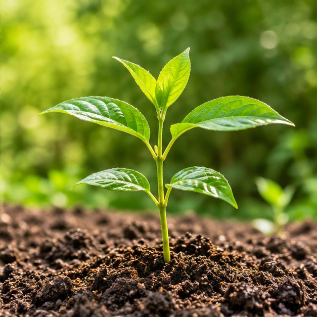
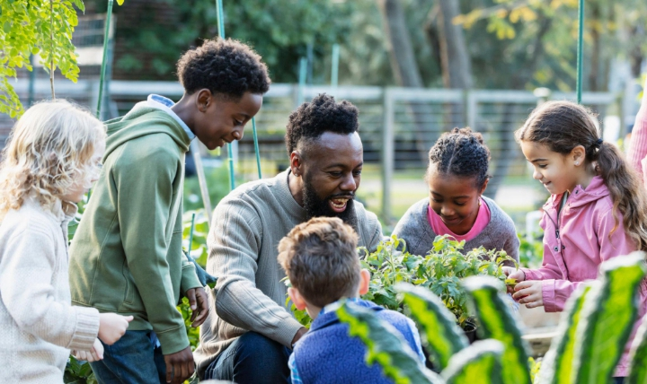
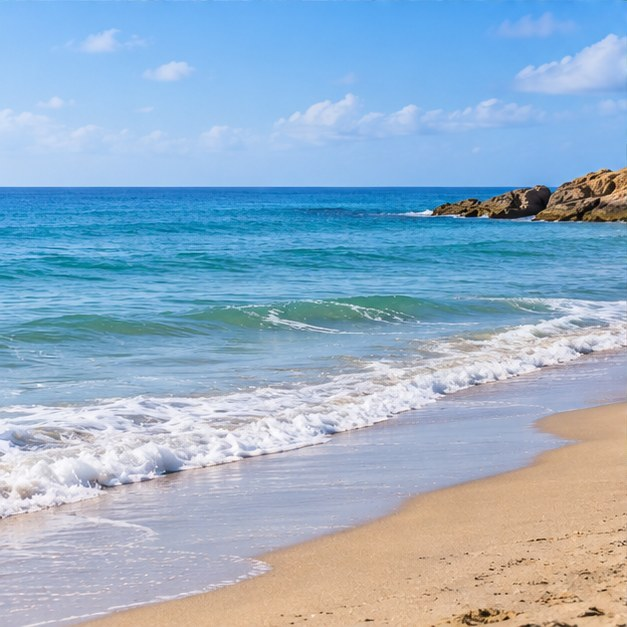
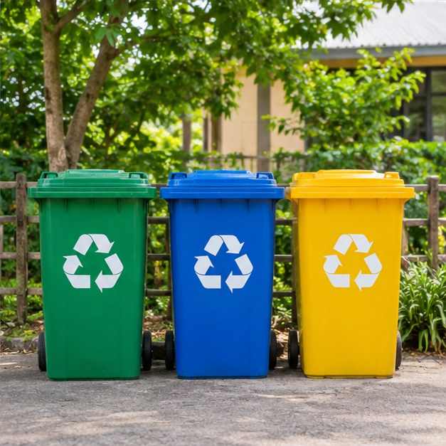

BIODIVERSITÉ
Un arbre, un avenir
Organiser des journées de plantation et sensibiliser à l'importance des arbres dans les écosystèmes.
Participer →PASSER À L'ACTION
Découvrez les initiatives que nous souhaitons développer pour protéger les espaces naturels et sensibiliser notre communauté.

NOS INITIATIVES
Trois axes d'action complémentaires pour contribuer à un environnement plus sain.

Organiser des journées de plantation et sensibiliser à l'importance des arbres dans les écosystèmes.
Participer →
Encourager les opérations de nettoyage des plages et la réduction des déchets plastiques.
Participer →
Partager des conseils pratiques sur le tri, la réutilisation et la réduction des déchets.
Participer →Nous n'avons pas besoin d'un petit nombre de personnes parfaites, mais de nombreuses personnes qui font de leur mieux.
— L'esprit Green Roots